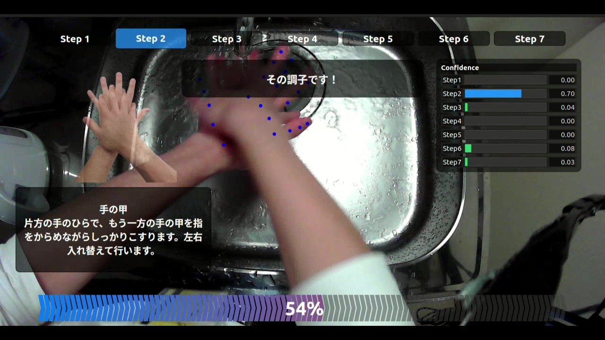

手順ごとのスコア
6ステップの得点を可視化し、苦手な手順を即座にフィードバック。個人別の教育プランに活用できます。


手洗い未実施を高精度で検出し、各手順の抜け漏れも見逃しません。AI判定はすべてエッジ処理のため、撮影データが外部に出ない安全設計です。
6ステップの得点を可視化し、苦手な手順を即座にフィードバック。個人別の教育プランに活用できます。

手洗い未実施を検出すると、バーチャルセキュリティゲートが警告し、実施率100%を仕組みで後押しします。
AIが各手順を判定し、苦手ポイントをフィードバックする様子を動画でご覧いただけます。お手元の映像に差し替えてご活用ください。
WHO準拠の正しい手洗いを動画と音声で案内しながら、手順ごとにリアルタイム採点します。
手順別の得意・不得意を自動集計し、重点指導が必要なポイントを可視化します。
部署・シフト別の教育成果と手洗い実施率を可視化し、衛生レベルを対外的にアピールできます。
評価基準をAIで統一し、指導者によるばらつきを排除。安心して受講できる環境を提供します。
自動採点と動画教材により、指導担当者の心理的・時間的負担を軽減。教育リソースを本来業務に集中できます。
SANICAMの機能・価格・連携方法を担当者がご案内します。オンラインデモもお気軽にお申し込みください。